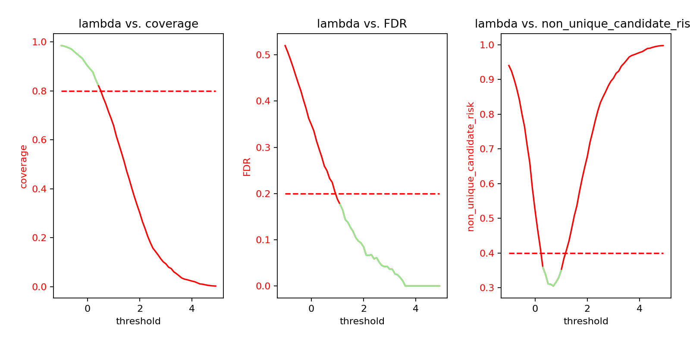

Note
Click here to download the full example code
Multi-Selective Classification
This example shows how to use the MultiSelectiveClassification and MapieRiskControl classes to perform multi-selective classification.
import os
import sys
from risk_control.decision.base import BaseDecision
from risk_control.parameter import BaseParameterSpace
basedir = os.path.abspath(os.path.join(os.path.curdir, ".."))
sys.path.append(basedir)
basedir = os.path.abspath(os.path.join(os.path.curdir, "."))
sys.path.append(basedir)
import numpy as np
from risk_control import MapieRiskControl
from risk_control.decision import MultiSelectiveClassification
from risk_control.plot import plot_p_values, plot_risk_curve
from risk_control.risk import AccuracyRisk, BaseRisk, CoverageRisk, RatioPredictionRisk
from utils.data import get_data_classification
from utils.model import get_model_classification
random_state = 42
np.random.seed(42)
First, we load the data and train a model.
X_train, X_cal, X_test, y_train, y_cal, y_test = get_data_classification(random_state)
clf = get_model_classification(X_train, y_train)
We can plot the data and the decision boundary.
# plot_classification(X_train, y_train)
Here, we define the decision, the risks, and the parameter space.
We use the MultiSelectiveClassification decision, the AccuracyRisk, RatioPredictionRisk
and CoverageRisk risks.
- The
MultiSelectiveClassificationdecision is a selective classification decision. In practice, it is a classification model with a threshold on any class confidence score. If the class confidence score is above the threshold, the class is put in the prediction set, otherwise it is not. The threshold is the parameter to tune. - The
AccuracyRiskrisk is the accuracy risk. We want the accuracy to be controlled at a given level (here 0.2, TODO: report the target performance instead of the target risk). - The
RatioPredictionRiskrisk is the ratio prediction risk. It is the ratio of accepted predictions. We want the ratio of predictions to be controlled at a given level (here 0.3, TODO: report the target performance instead of the target risk). - The
CoverageRiskrisk is the coverage risk. It is the ratio of predictions containing the true label. We want the coverage to be controlled at a given level (here 0.5, TODO: report the target performance instead of the target risk).
We want to find the valid thresholds that control the risks at the given levels with a confidence level (here 0.9, TODO: report the confidence level instead of the delta).
Among the valid thresholds, we want to find the one that maximizes the AccuracyRisk risk
(beause it is the first risk in the list of risks and control_method="lmin").
parameter_range = np.arange(-1.0, 5.0, 0.1)
decision: BaseDecision = MultiSelectiveClassification(estimator=clf)
risks: list[BaseRisk] = [AccuracyRisk(0.2), RatioPredictionRisk(0.3), CoverageRisk(0.5)]
params: BaseParameterSpace = {"threshold": parameter_range} # , "toto": parameter_range}
clf_mapie = MapieRiskControl(
decision=decision,
risks=risks,
params=params,
delta=0.1,
control_method="lmin",
)
Now, we fit the model and plot the results. In practice, this function will be used to find the valid thresholds that control the risks at the given levels with a confidence level given by the data.
A summary of the results is printed that contains the optimal threshold and the corresponding risks.
clf_mapie.fit(X_cal, y_cal)
clf_mapie.summary()
Out:
/Users/thibaultcordier/VSCodeProjects/mapie-experiments/RiskControl/risk_control/tools/pvalues.py:28: RuntimeWarning: divide by zero encountered in divide
clt_p_values = 1 - norm.cdf((alpha - means) / stds * np.sqrt(n_samples))
/Users/thibaultcordier/VSCodeProjects/mapie-experiments/RiskControl/risk_control/risk_control.py:425: UserWarning: No valid hypotheses.
warnings.warn("No valid hypotheses.")
=== SUMMARY ===
p(risk<=alpha) >= 1-delta
1-delta: 0.90
=== risks ===
accuracy | optimal: inf | alpha: 0.8
pred_ratio | optimal: inf | alpha: 0.7
coverage | optimal: inf | alpha: 0.5
=== params ===
threshold | optimal: inf
We can plot the risk curves for each risk.
plot_risk_curve(clf_mapie)

Out:
/Users/thibaultcordier/VSCodeProjects/mapie-experiments/RiskControl/risk_control/plot.py:144: UserWarning: FigureCanvasAgg is non-interactive, and thus cannot be shown
plt.show()
We can also plot the p-values for each multiple tests (parameter space).
plot_p_values(clf_mapie)
Out:
/Users/thibaultcordier/VSCodeProjects/mapie-experiments/RiskControl/risk_control/plot.py:30: UserWarning: FigureCanvasAgg is non-interactive, and thus cannot be shown
plt.show()
Finally, we can use the optimal threshold to predict on the test set and compute the risks. The risks are computed on the test set and converted to performance metrics. We can check that the risks are controlled at the given levels.
y_pred = clf_mapie.predict(X_test)
for risk in risks:
ratio = risk.convert_to_performance(np.nanmean(risk.compute(y_pred, y_test)))
print(f"{risk.name}: {ratio:.2f}")
Out:
accuracy: 0.65
pred_ratio: 1.00
coverage: 0.89
Total running time of the script: ( 0 minutes 0.155 seconds)
Download Python source code: plot_classification_bis.py